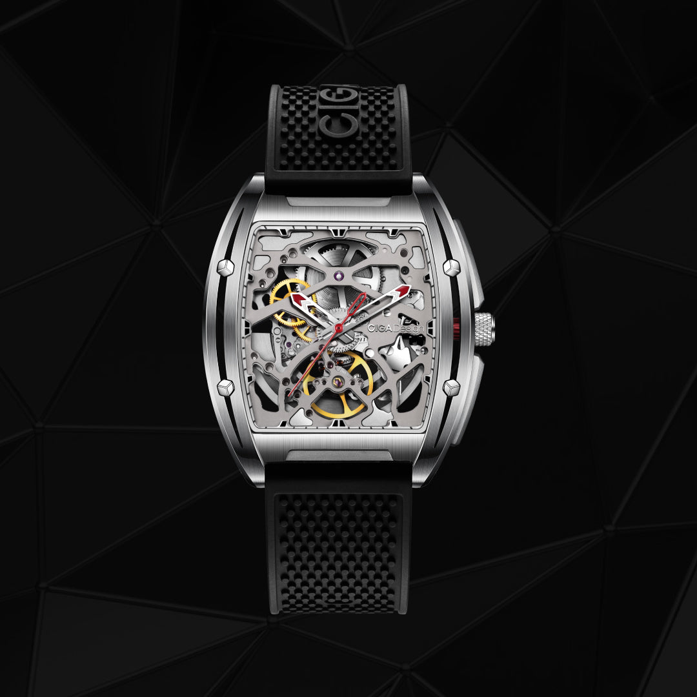
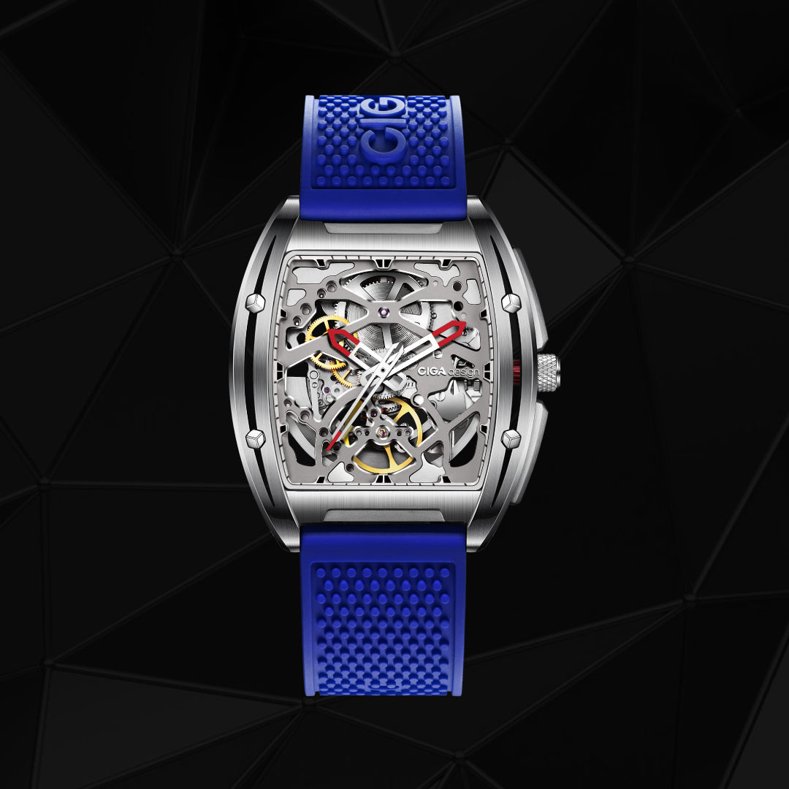
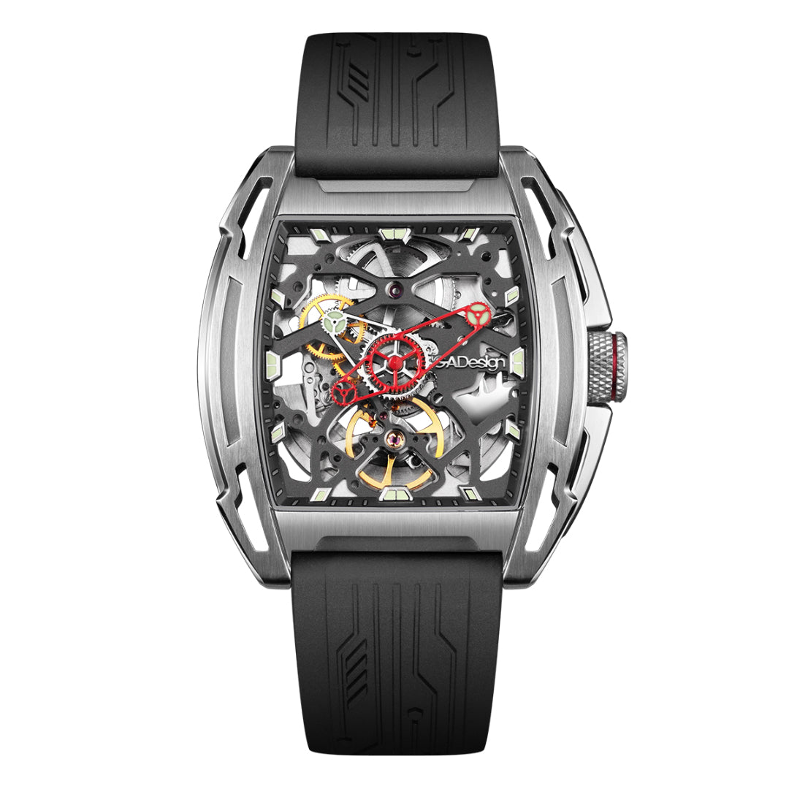

Vencedor do German Design Award 2020, o Edge redefine o conceito de relógio tonneau masculino com geometria precisa, movimento automático e presença irresistível no pulso.
Vencedor · 2020
O Edge é a prova de que design de vanguarda e precisão mecânica podem coexistir em um relógio que desafia convenções e conquista reconhecimento internacional.

O CIGA design Edge não é apenas um relógio — é um manifesto de design. Sua silhueta tonneau de 48×40,8mm estabelece uma presença visual imediata, combinando linhas retas precisas com curvas calculadas que conferem dinamismo e modernidade.
Cada ângulo da caixa foi planejado para capturar e refletir a luz de forma diferente, criando um jogo visual que transforma o relógio em escultura. O resultado conquistou o júri do German Design Award 2020, um dos mais respeitados prêmios de design industrial do mundo.
A combinação de aço inoxidável polido e escovado na mesma peça cria contraste sofisticado — uma característica que elevou o Edge a símbolo da nova geração de relojoaria de design.

Sob o mostrador clean do Edge, um movimento automático CIGA design customizado opera com precisão. O indicador de reserva de marcha integrado ao mostrador transforma informação técnica em elemento visual elegante — você sabe exatamente quanto tempo de energia resta sem consultar nenhum manual.
Com 21 joias, frequência de 21,600 vph e aproximadamente 40 horas de reserva de marcha, o calibre entrega estabilidade e precisão dignas de um relógio premiado. O rotor de auto-carregamento é visível pelo caseback em vidro de safira — outro ângulo de contemplação.
Os ponteiros facetados e os índices aplicados capturam a luz de forma dramática, criando legibilidade excepcional sem comprometer a elegância minimal do mostrador.
Reconhecimento oficial do júri alemão pelo design inovador e identidade visual única — um dos prêmios de design mais cobiçados do mundo.
Indicador de power reserve integrado ao mostrador — funcionalidade técnica exibida com elegância como elemento do design.
Vidro de safira sintética frontal e no caseback, permitindo contemplar o movimento automático de ambos os lados do relógio.
Revestimento luminescente suíço nos ponteiros e índices para legibilidade garantida em qualquer condição de iluminação.
Cada especificação do Edge foi pensada para sustentar um design premiado com performance mecânica de alto nível.

| Tamanho da Caixa | 48mm × 40,8mm (tonneau) |
| Espessura da Caixa | 13,7mm |
| Material da Caixa | Aço inoxidável 316L (polido + escovado) |
| Tipo de Movimento | Automático — calibre CIGA design customizado |
| Frequência | 21,600 vph |
| Reserva de Marcha | Aproximadamente 40 horas |
| Joias | 21 joias |
| Precisão | -15 ~ +30 segundos/dia |
| Indicador | Power reserve visível no mostrador |
| Vidro | Safira sintética (frente e caseback) |
| Resistência à Água | 3 ATM (30 metros) |
| Largura da Pulseira | 22mm |
| Material da Pulseira | Couro genuíno / opção em aço |
| Luminescência | Super-LumiNova® (ponteiros e índices) |
O German Design Award é concedido pelo Conselho Alemão de Design (Rat für Formgebung), uma das organizações de design mais influentes do mundo. A vitória do Edge em 2020 reconheceu oficialmente a capacidade da CIGA design de criar produtos com identidade visual inconfundível e relevância global — elevando a marca ao patamar das referências internacionais de design de produto.
Informações essenciais para que sua apresentação do Edge seja precisa, autêntica e de alto impacto narrativo.
Como embaixador do Edge, você está apresentando um relógio com reconhecimento internacional de design. Cada detalhe comunicado deve refletir o nível de excelência que conquistou o German Design Award. Siga estas diretrizes para transmitir a essência da peça com a autoridade que ela merece.
Cada ângulo narrativo abaixo foi construído para maximizar o impacto do seu conteúdo sobre o Edge.
| # | Direcionamento | Foco Narrativo | Base do Script (Exemplo) |
|---|---|---|---|
| 01 | O Prêmio que Valida | German Design Award 2020 como prova de excelência. | "Esse relógio não é só bonito — ele venceu o German Design Award 2020. Um júri internacional de especialistas escolheu o Edge como referência global de design." |
| 02 | A Silhueta Tonneau | A forma histórica reimaginada para o presente. | "A forma tonneau tem mais de 100 anos na relojoaria suíça. A CIGA design pegou esse clássico e reinventou com precisão contemporânea — e ganhou um prêmio por isso." |
| 03 | Power Reserve Visível | Funcionalidade técnica como elemento de design. | "Esse indicador no mostrador não é decoração — ele mostra exatamente quanto tempo de energia sobrou no movimento automático. É informação técnica com elegância." |
| 04 | Caseback em Safira | O movimento visível como segundo mostrador. | "A maioria dos relógios mostra o mostrador. O Edge mostra os dois lados. Vire o pulso e você vê o calibre automático funcionando em tempo real através do caseback em safira." |
| 05 | Acabamento Duplo | Polido e escovado na mesma caixa. | "Olha como a luz joga diferente em cada face dessa caixa. Um lado polido como espelho, outro escovado como cetim. É uma escolha de design que transforma o relógio ao longo do dia." |
| 06 | Calibre Automático | O movimento desenvolvido pela própria CIGA design. | "21 joias, 21,600 vph, 40 horas de reserva. O calibre do Edge é desenvolvido pela própria CIGA design — não é um motor genérico importado do mercado." |
| 07 | Super-LumiNova® | Legibilidade em qualquer condição de luz. | "Mesmo no escuro, o Edge entrega. O Super-LumiNova® nos ponteiros e índices mantém a leitura do tempo clara e elegante em qualquer ambiente." |
| 08 | 17 Prêmios da Marca | O DNA premiado da CIGA design. | "O Edge carrega o DNA de uma marca com 17 prêmios internacionais — German Design Award, iF Design Award, Red Dot, GPHG. Cada relógio é filho dessa tradição." |
| 09 | Presente Para Homens | O Edge como presente masculino de impacto. | "Se você quer dar um presente que impressiona, o Edge tem o que todo homem quer: design reconhecido internacionalmente, movimento mecânico e uma história para contar." |
| 10 | Embalagem Literária | O unboxing em formato de livro como experiência. | "A caixa do Edge chega em embalagem formato livro com papel reciclado premium. A experiência começa antes de colocar o relógio no pulso." |
Imagens oficiais do Edge disponíveis para uso em seu conteúdo.

